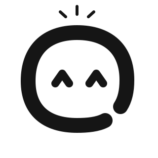
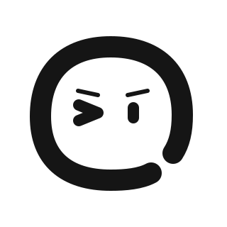
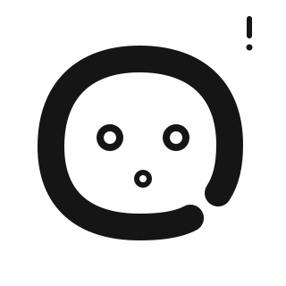

疑惑
picture 在宿主页面中选择静态替代文件，可靠响应减少动态效果偏好。
疑惑

灵感

专注

惊讶

困倦
开心
鼓励
出错
<picture>
<source media="(prefers-reduced-motion: reduce)"
srcset="static/omi-curious-black.svg">
<img src="omi-curious-black.svg" width="80" height="80" alt="Omi · 疑惑">
</picture>